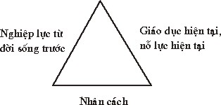
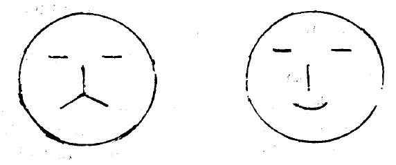
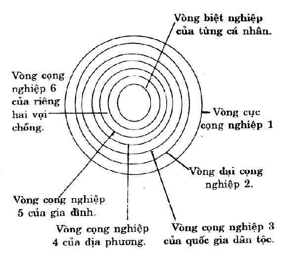

|
BuddhaSasana Home Page |
Vietnamese, with Unicode Times font |
Thuyết Bốn Ðế
Giáo sư Minh Chi
|
-[02]- II.B NGHIỆP 1. NGUỒN GỐC CỦA TƯ TƯỞNG NGHIỆP LỰC: Các nhà Ấn Ðộ học như người Ðức Zimmer và Basham đều cho rằng, ngay trước khi bộ tộc Aryan vào Ấn Ðộ, những người thổ dân ở đây (giống người Dravidiens) vốn đã có các khái mệm về nghiệp, Du già (yoga), giải thoát. Trong các giáo phái ở Ấn Ðộ cổ đại, Kỳ na Giáo (Jainism) - là tôn giáo có nhiều liên hệ với Phật giáo Nguyên thủy, và với tín ngưỡng dân gian Ấn Ðộ. Thuyết nghiệp của Kỳ Na giáo và Phật giáo Nguyên thủy khác nhau và giống nhau ở chỗ nào? Quan điểm của Phật giáo, nghiệp thiện hay ác chỉ có thể hình thành trên cơ sở động cơ tâm lý của đương sự (tức là dụng tâm - motivation). Kinh Phật Nguyên thủy gọi dụng tâm đó là tác ý (cetana). Nói cách khác, tác ý chính là nghiệp. Không có tác ý thì không có nghiệp. Kỳ Na giáo có một quan điểm cơ giới về nghiệp: nhơn biểu hiện ra như thế nào thì quả biểu hiện ra như thế ấy, bất kể động cơ tâm lý hay dụng tâm của đương sự như thế nào, ví dụ, một người do vô ý mà phạm tộí sát sinh, thì sẽ phải chịu quả báo của sát sinh, không thể tránh .khỏi được. Kỳ Na giáo lại còn chủ trương, nên sống khổ hạnh ép xác tự làm khổ mình thì có thể bù cho nghiệp ác tạo ra từ đời trước, triệt tiêu nghiệp ác này, nhờ đó mà được giải thoát. Ðồng thời, kiên trì không làm gì hết để không còn tạo nghiệp mới nữa. Ðó là phương pháp giải thoát của Kỳ Na giáo. Quan diểm về nghiệp của Kỳ Na giáo "tuy không cố ý sát, nhưng cũng phải chịu quả báo sát sinh" được phê phán trong bộ luận Kathavatthu. Ðối với Phật giáo, động cơ tâm lý (dụng tâm, tác ý) thiện hay ác là cái quyết định sự hình thành nghiệp lực, chứ không cố chấp vào hành vi tạo nghiệp bên ngoài. Quan điểm nghiệp lực của Phật giáo là một quan điểm không chấp tướng, nó thúc đẩy mọi người hướng thưọng về mặt nội tâm. Luận sư Buddhaghosa (Giác Âm cũng gọi là Phật Âm) đã so sảnh hai quan điểm nghiệp lực khác nhau của Phật giáo và Kỳ Na giáo như sau: "Phật giáo đồ như con sư tử vậy, khi kẻ đi săn nhắm bắn vào con sư tử, thì con sư tử dũng mãnh xông vào kẻ đi săn: Người Phật tử nỗ lực diệt khổ não, biết rõ phưong pháp diệt khổ não là diệt trừ căn nguyên của khổ não (chứ không phải diệt trừ cái ở bên ngoài căn nguyên đó). Còn ngoại dạo Kỳ Na giáo, thì giống như con chó vậy. Khi con chó bị người ta đánh thì nó không xông lại cắn người đánh mà lại cắn cái gậy. Người Phật tử nói: phương pháp loay hoay trong quả báo, chứ không phải trực tiếp đối trị nguyên nhân tạo thành quả báo". Nghiệp của Phật Giáo không có tính cơ giới, và định mạng. Do đó, nó coi trọng ý chí tự do của con người, nó đề cao nỗ lực đạo đức. Nghiệp lực, theo quan điểm Phật giáo là một sức mạnh lớn lao, nó không những chi phối sự diễn biến của đời sống con người, mà còn thông qua con người, chi phối sự diễn biến của vũ trụ nữa. Nghiệp lực chính là cốt lõi của quy luật nhân quả báo ứng; quy luật đạo đức. Vì sự vận hành của nghiệp lực quan hệ với nhiều điều kiện, nhiều nhân, nhiều duyên lý tri con người khó lường hết quan hệ của nghiệp lực. Thậm chí có tác giả viết: Nghiệp lực là một cái gì huyền bí! 2. NGHIỆP LỰC LÀ MỘT SỨC MẠNH Nghiệp là hành động, và hành động nào cũng tự nhiên tạo ra một sức mạnh, sức mạnh đó lại thúc đẩy con người có hành động mới, như vậy cứ xoay vòng mãi.  Thế nhưng, hành động không những tạo ra sức mạnh, thúc đẩy con người có hành động mới, mà đồng thời cũng thúc ép con người phải chịu hậu quả của hành động của mình, ràng buộc con người với hậu quả đó. Thí dụ, kết hôn là một loại hành động, nó thúc đẩy người đàn ông, người đàn bà phải có quan hệ tình dục với nhau, dẫn tới sinh con, đẻ cái, và quy dịnh trách vụ của cha và mẹ đối với việc nuôi nấng, giáo dục con cái nên người... Nghiệp là hành động, nó tạo ra sức mạnh thúc đẩy con người có hành động mới, mặt khác cũng tạo ra một sự ràng buộc đối với con người. Ðó là ý nghĩa cơ bản của nghiệp. Một người có hành động tạo thành một sức mạnh. Hàng trăm ngàn vạn người hành động, phối hợp tạo thành sức mạnh vĩ đại. Ðó là sức mạnh của cộng nghiệp, lớn hơn nhiều sức mạnh của riêng từng người, biệt nghiệp. Một ví dụ sống động của cộng nghiệp là chiến tranh. Chính cộng nghiệp thúc đẩy hàng trăm nghìn vạn thanh niên rời bỏ quê hương, đến chiến trường sát hại những thanh niên khác, làm cái việc mà thực ra họ không muốn làm. Nghiệp là nguyên động lực thúc đẩy, sáng tạo và hủy diệt các loài hữu tình cũng như thế giới, thì một câu hỏi đặt ra: Do đâu mà có nghiệp? Phật giáo trả lời: "Do vô minh và Hành. Vô minh chữ Sanskrit là Avidya nghĩa là không biết, ngu si. Hành, chữ Sanskrit là sankara là một loại xung động bản năng (A. impulse)". Triết gia Ðức Schopenhouer gọi đó là một loại ý dục (will), nếu phân tích cụ thể thì có hai loại: ý dục sinh tồn (will to live), và ý dục hoạt dộng (will to act). Schopenhouer gọi cái ý dục dó là cái Ta thực của con người. Theo đạo Phật, vô mỉnh chính là phiền não tham, sân, si v.v... Phiền não thúc đẩy con người tạo ra các nghiệp thiện, ác, gọi chung là hành, do đó mà có từ hành nghiệp, và nghiệp lôi kéo chúng sanh vào cõi luân hồi sanh tử. 3. NGHIỆP LỰC LÀ SỨC MẠNH BỒI DƯỠNG NHAÂN CÁCH Ðại sư Tây Tạng Tkongsapa viết: "Nếu một người ở đời sống trước thích thú sát sanh, đời sống này cũng thích thú sát sanh; đời sống trước thích thú ăn cắp, đời sống này cũng thích thú ăn cắp, do đó chúng ta thấy, có người từ nhỏ tuổi đến lớn tuổi lấy sát sinh làm vui, nhưng lại có người không nở sát hại con kiến và côn trùng". (Bồ đề thứ đệ luận) Ðó là cái mà đạo Phật gọi là "đẳng lưu quả" (S. Nisyandaphala). Cho nên, có thể nói một người thường làm một việc gì đó thì sẽ biến thành một loại người tương tự. Một người ba mươi năm làm cảnh sát thì tư tưởng, hành động, cách nói chuyện của anh ta sẽ mang dấu ấn của người cảnh sát. Nếu anh ta làm nghề thợ mộc ba mươi năm, thì tư tưởng, hành động, cách nói chuyện của anh ta sẽ là của anh thợ mộc. Nhà kinh doanh gặp gỡ, thấy gì cũng tính chuyện làm ăn lổ lãi. Nhân cách con người là do tập quán hun đúc thành. Nếu không có sự huân tập của tập quán thì không thể thành nhân cách được, nó là một sự huân tập nhiều khi bắt đầu từ nhiều cuộc sống truớc, cho nên mới có những hiện tượng thiên tài hay thần đồng kỳ lạ mà các thuyết về di truyền học không thể giải thích một cách thỏa mãn được. Trong khi đó thì thuyết nhơn quả ba dời của Phật giáo có thể cung cấp một lý giải thỏa đáng nhứt. Tuy rằng sự huân tập của đời trước ảnh hưởng lớn đến sự hình thành nhân cách, nhưng hoàn cảnh hiện tại, nền giáo dục và nỗ lực trong đời sống hiện tại cũng đều là nhân tố quan trọng, ảnh hưỏng tới sự hình thành nhân cách của con người hiện tại. Có thể thấy qua biểu đồ nhân cách được tạo thành bởi hai loại nhân tố: Nghiệp lực của đời sống trước, giáo dục và nỗ lực trong hiện tại. 4. NGHIỆP LỰC LÀ MỘT QUY LUẬT ÐẠO ÐỨC CÔNG BẰNG Bài kệ "Thập lai" sau đây cũng đồng một tư tưởng như vậy:
Trong kinh "Na tiên Tỷ kheo" (cũng gọi là Di Lan Ðà Vấn đạo kinh), cũng có một đoạn nói về nghiệp:
Ðại sư Tây Tạng Tsongkapa, viết trong cuốn "Bồ đề thứ đệ luận": Ðời trước, nghiệp sát quá nặng, thì đời nay chịu quả báo chết yểu, và nhiều bịnh; trẻ con chết sớm là do dời trước tạo ra nghiệp sát sanh. Do nghiệp đời trước mà có người đời nay, mắc bịnh nan y, suốt đời không chữa khỏi. Có người làm việc cật lực nhưng vẫn không có tiền xài; có người không mệt nhọc gì lại có nhiều tiền của. Ðó là quả báo khác nhau của người ở đời trước keo kiệt hay là ưa bố thí... có những người nói rất nhiều nhưng chẳng ai tin, có người nói ít thôi mà lại được mọi người tin cậy, đó cũng là quả báo của hai loại người: một người thành thực, một người hay lừa dối. (Xem H Guenther... "The Jewel Ornament of Liberation" - Chương 6 bàn về nghiệp quả). Tư tưởng "nhơn quả báo ứng" ăn sâu vào tâm lý của người phương Ðông có ảnh hưỏng thực lớn lao đến đời sống xã hội. Ở các nước Phật giáo Nam phương như: Miến Ðiện, Thái Lan, Tích Lan... tăng sĩ không có tài sản riêng, cũng không làm ruộng, hàng ngày cầm bát khất thực. Cả năm, ngày nào cũng vậy, nhân dân chuẩn bị thức ăn sẫn, với thái độ hết sức cung kính đem cúng dường chư Tăng. Còn ở phương Tây, khi một khách lạ đến nhà không báo trước, dù là ăn một bữa, cũng chịu đựng không nổi rồi. Nhân dân các nước Phật giáo Nam phương sở dĩ có tập tục tốt đẹp như vậy là vì trong kinh Phật thường dạy cúng dường Tăng chúng được phước đức rất lớn, tăng chúng là ruộng phước tối thượng. Nhưng nếu có người hỏi, vì sao quả lại tương ưng và đồng loại với nhân? Từ đâu lại có nguyên lý đồng loại tương ưng đó? Kinh Phật thường chỉ trả lời: "Pháp là vậy" (pháp nhĩ như thị). Nói một cách khác, tự nhiên là vậy. Nếu anh cười nhạo người ta thì người ta cười nhạo lại anh. Nếu anh giận dỗi đối với người ta, thì người ta cũng không vui vẻ đối với anh. Tự nhiên nó là như vậy, làm sao mà giải thích được. Hãy xem bản vẽ hai mặt người sau đây:  Trong hai bản vẽ này, mắt, lông mi, mũi đều giống nhau, chỉ miệng là khác. Miệng nhếch xuống thì là dáng mặt lo buồn miệng nhếch lên thì là dáng mặt vui vẻ. Sao lại như vậy? Sao mà giải thích được? Ðối với tiền đề lớn quả báo thiện ác, các tôn giáo lón nói chung nhứt trí như trong sách Tân ước (Galatian 6: 07) có câu: "Chỉ có tự lừa dối mình, không thể coi thường Thượng Ðế được đâu Người trồng gì thì thu hoạch nấy" Hoặc: Thiên võng khôi khôi, sơ nhi bất lậu. (Lão tử). Nghĩa: Lưới trời lồng lộng, sửa mà không bỏ sót. Các tôn giáo Thần quyền (Tự nhiên thần luận; Deism) hay là nhân cách thần luận (Theism) cũng vậy đều cho rằng Thượng Ðế sáng tạo ra vũ trụ, đồng thời cũng sáng tạo ra qui luật vận hành vũ trụ, đó là luật nhơn quả tương ưng. Thượng Ðế tất nhiên khen thưỏng người thiện lành, và xử phạt kẻ làm ác, đó là thần ý luận. Còn cách nhìn của Phật giáo đối với luật nhơn qu?, là tự nhiên luận, không phải là thần ý luận. Giải thích bằng tự nhiên luận, thực ra không phải là giải thích. Giải thích bằng Thần ý luận là một lối giải thích, nhưng lối giải thích chưa hẳn là cao minh cho lắm. Nếu chúng ta hỏi thêm các nhà Thần học Thiên chúa giáo: "Vì sao Thượng đế lại khen thưởng người thiện và xử phạt người ác, mà không làm ngược lại?" Lại hỏi Thượng Ðế từ ở đâu đến? Nhà Thần học Thiên chúa giáo sẽ không thể trả lời được. Lối giải thích mọi hiện tưọng tự nhiên, khó hiểu bằng thần thánh an bài gọi là "Luận thuyết lấy Thần thay người" (Anthropomorphism). 5. NGHIỆP LỰC LÀ MỘT LOẠI QUAN HỆ Quan hệ nghiệp lực khá phức tạp, tạm minh họa bằng biểu đồ sau đây:  Biểu đồ có bảy vòng, mỗi vòng đại diện cho một phạm vi nghiệp lực. Vòng ngoài nhứt cũng là vòng lớn nhứt, phổ biến nhứt. phạm vi cọng nghiệp lớn nhứt. Tạm gọi tất là vòng cực cọng nghiệp. Vòng thứ hai, so với vòng thứ nhứt có một phạm vi nghiệp lực hẹp hơn, tạm gọi là vòng đại cọng nghiệp. Như vậy, phạm vi cọng nghiệp thu nhỏ dần cho tới vòng bảy, là vòng cuối cùng, vòng bất cọng nghiệp của cá nhân. Ðó là nghiệp do cá nhân tạo ra, và một mình cá nhân chịu quả báo mà thôi. Vòng 1, vòng cực cọng nghiệp là phạm vi của con người được nhận thức như là một sinh vật. Người cùng với bất cứ một sinh vật nào khác có cọng nghíệp đều cần có ánh sáng mặt trời, không khí và nước để mà sinh tồn. Ðó là cọng nghiệp của tất cả mọi sinh vật sống trên trái đất này. Vòng cọng nghiệp này bao gồm cả sinh vật và loài người ở trong đó. Phạm vi cọng nghiệp càng lớn, tính bắt buộc của nghiệp càng chặt. Thí dụ: người có thể không mặc quần áo, không có nhà ở vẫn sống được, nhưng không thể nào thoát ly ánh sáng mặt trờí, không khí và nước mà có thể sống được. Vòng hai, là vòng đại cọng nghiệp, của riêng loài người. Ở vòng nghiệp lực này, chỉ có người, loài người mới được hưởng thụ và chịu hạn chế bởi cọng nghiệp này mà thôi. Thí dụ: chỉ có loài người mới dùng ngôn ngữ và chữ viết để thông tin cho nhau. Các động, thực vật khác không biết dùng ngôn ngữ và chữ viết. Việc dùng ngôn ngữ và chữ viết để thông tin có mặt hạn chế của nó. Thí dụ: những người không cùng một ngôn ngữ, khó nói chuyện với nhau được. Người không biết đọc, biết viết được cung cấp một lượng thông tin ít hơn, so với nguời biết đọc biết viết. Một đặc sắc thứ hai của loài người là có ý thức dạo đức. Tuy rằng, một số động vật cao cấp khác cũng có ý thức đạo đức nhưng tình hình này ít phổ biến hơn, chỉ là cá biệt. Một đặc sắc nữa của loài người, so với các loài vật khác là người có lý trí, có năng lực tự giác (self conscious) còn các loài vật khác thì thường là hành động theo bản năng, theo phản xạ. Con người không những có thể quan sát sự vật bên ngoài, tìm ra chân tướng của sự vật bên ngoài, mà người còn có khả năng siêu việt tự ngã (self transcendance), lấy tự ngã làm đối tượng khách quan để quan sát và tự hoàn thiện mình. Nói tóm lại loài người có ba năng lực: dùng ngôn ngữ, có ý thức đạo đức, có năng lực tự giác khiến con người thành một sinh vật có lý tánh, có cảm tình (đạo dức), và sống, hành động có mục đích. Vòng nghiệp thứ ba là vòng cọng nghiêp của quốc gia dân tộc. Vì con người là một động vật xã hội, cho nên cuộc sống và hoạt động của nó không thể không bị chủng tộc dân tộc và quốc gia chi phối và ảnh hưỏng. Kỹ thuật rất tiên tiến của giao thông liên lạc hiện đại cũng không làm giảm sút vai trò của chủng tộc, dân tộc và quốc gia. Hiện nay các quốc gia vẫn là những đơn vị, những chủ thể chi phối cục thế chính trị quốc tế, quyết dịnh hòa bình và chiến tranh. Trong mỗi quốc gia, mỗi người đều có quyền lợi và trách nhiệm là phần cọng nghiệp của người đó trong quốc gia đó. Thí dụ: nhân dân Việt Nam trong lịch sử của mình, có thể nói là liên tiếp bị ngoại xâm, đồng thời cũng chủ động gây nhiều cuộc chiến tranh xâm lược, đó là cọng nghiệp của nhân dân Việt Nam. Theo báo chí cho biết, thì ở ChiLê, có thời gian quân dịch tương dối dài hơn, so với các nước khác. Ở Anh, nhân dân dóng thuế thu nhập cao hơn hết. Ở Koet, một nước xuất cảng dầu hỏa giàu có, tỷ lệ nhà nước chi phí phúc lợi cho nhân dân cao hơn hết, so với các nước khác. Còn ở vương Quốc Brunei ( Ðông Nam Á) vì quá giàu về dầu hỏa nên nhân dân không phải đóng một khoản thuế nào hết, lại được hưởng rất nhiều phúc lợi. Vòng cọng nghiệp thứ tư, thuộc những tập đoàn hay cộng đồng nhỏ hơn quốc gia. Một thí dụ: cọng nghiệp của người Việt Nam sống ở Thành phố Hồ Chí Minh khác với cọng nghiệp của người Việt Nam sống ở nông thôn lục tỉnh. Học sinh Anh Văn ở thành phố Hồ Chí Minh thường có trình độ Anh ngữ giỏi hơn học sinh Anh Văn ở những nơi khác, do các điều kiện như thầy giỏi hon học cụ tốt hơn v.v. Tất nhiên đây là nói chung, còn số người học Anh Văn kém ở Thành phố Hồ Chí Minh cũng không ít, số người học Anh văn khá ở lục tỉnh cũng không ít. Vòng cọng nghiệp thứ năm là vòng cọng nghiệp của gia dình, các thành viên trong gia đình đều chịu (hay là hưởng) cọng nghiệp của gia đình đó. Nếu đó là gia đình giàu có, sung túc, chủ gia đình là nguời giỏi, có trình độ nghề nghiệp cao thì cả gia đình đều được lợi. Trái lại, nếu chủ gia đình là người sống bừa bãi, đã không làm ra tiền lại còn ăn chơi tiêu xài, thì cả gia đình phải chịu khổ lây. Vòng cọng nghiệp thứ sáu, tạm gọi là vòng cực bất cọng nghiệp, có một phạm vi còn nhỏ hơn gia đình nữa. Một thí dụ: là quan hệ vợ chồng, rõ ràng đó là quan hệ riêng có giữa hai vợ chồng, không thể có người thứ ba nào xen vào được, dù là cha mẹ, anh em. Các vòng quan hệ thầy trò, người yêu, anh em đều thuộc loại vòng cọng nghiệp thứ sáu. Vì chỉ là cọng nghiệp giữa hai người mà thôi, cho nên gọi là cực bất cọng nghiệp. Cuối cùng là vòng nghiệp thứ bảy, là của riêng từng người, chỉ có cá nhân người ấy biết, chịu đựng hay hưỏng thụ mà thôi. Chỉ riêng người ấy cảm nhận, lạnh, nóng, khát, đói, buồn rầu hay vui vẻ... Ðấy là vòng có thể gọi là tối cực bất cọng nghiệp. 6. NGHIỆP LỰC LÀ MỘT CÁI GÌ KHÓ HIỂU: Khi nói thần bí là nói trí tuệ hạn chế của con người, không thể hiểu nổi không thể lường được. Trước loại sự kiện như vậy, người theo đạo Gia Tô nói: Ðó là ý Chúa. Còn người theo đạo phật thì nói: "Ðó là do nghiệp". Thế nhưng, cơ chế của nghiệp dẫn tới sự kiện đó thì Phật giáo cũng khó nói ra một cách rành mạch, vì vậy mà có sách Phật nói: Nghiệp lực là một cái gì thần bí. Sau đây là một đoạn đàm thoại giữa vua Di Lan Ðà (Milinda) và tỷ kheo Na Tiên (Nagasena), có liên quan dến tính chất thần bí của nghiệp.
Cách trả lời của Tỷ Kheo Na Tiên tuy không phải là thực hoàn hảo, không thể bắt bẻ lại được, nhưng nó cũng cho chúng ta thấy tính bất khả tư nghì của nghiệp. Cũng do nghiệp lực mà chim Khổng Tước ăn đồ độc, đã không chết, lại còn khỏe ra, còn người trúng độc thì chết ngay, nếu không kịp chữa chạy. 7. LƯỚI NGHIỆP VÀ 12 NHƠN DUYÊN: Chúng sinh vùng vẫy trong lưới nghiệp, hết đời sống này qua đời sống khác, không thoát ra được lưới nghiệp đó chính là 12 nhơn duyên:
Xúc thọ, ái, thủ, hữu là năm chi thuộc nghiệp nhân của đời sống hiện tại. Sanh, già, chết là quả vị lai. 12 nhơn duyên là nguyên động lực, lôi kéo chúng sanh ra vào ba cõi, tạo ra các nghiệp. Muốn thoát khỏi lưới nghiệp phải dùng gươm trí tuệ đoạn trừ vô minh, phiền não (phiền não chướng), không còn tạo nghiệp và tái sinh nữa: đó là giải thoát. Giá trị và ý nghĩa của nhân sinh đối với đạo Phật như vậy là khá rõ. Con đường thoát khổ cũng được Ðức Phật vạch ra minh bạch. Nhưng ngoại đạo lại bị tà kiến che mờ, cho nên họ không hiểu được ý nghĩa của nhân sinh và con đưòng thoát khổ. Kinh Tăng Chi của Phật giáo Nam phương có trích lời Phật như sau: "Này, các tỷ kheo, các ngoại dạo có ba loại tà kiến, nếu tin theo thì phước đức sẽ bị tiêu tan, bại hoại. Ba tà kiến đó là gì?" Thứ nhất là tà kiến về mạng vận. Ðời này được vui hay chịu khổ là do mạng vận quyết dịnh trước. Thứ hai là tà kiến về Thần. Mọi việc đều do ý chí của Thần, Thượng đế an bài, con người không thể làm gì để tránh khỏi được. Thứ ba là cho rằng, mọi việc xảy ra ở đời này đều là ngẫu nhiên, tình cờ, do đó mà con người sống rồi thác đi buông trôi. Ta gặp nhĩmg người đó và hỏi: "những diều ấy đáng tin chăng?". Họ đáp: "Ðáng tin". Ta bèn hỏi: "thế thì các tội sát, đạo, dâm, vọng... cũng đều do thần an bày cả chăng? Ðều do mạng vận sắp đặt cả chăng? Hay đều là do ngẫu nhiên chăng?" Thế nhưng hành vi của mình sai thì tự mình phải sửa chữa, theo thiện, bỏ ác. Con người phạm sai lầm thì phải trách mình, và tự hối, đoạn trừ lỗi lầm cũ thì mới tạo ra được mạng vận mới cho mình. Ngoại đạo nghe lời dạy bảo của Phật, không trả lời được câu nào bèn bỏ đi nơi khác. 8. PHÂN LOẠI NGHIỆP Có nhiều cách phân loại: I- Một cách là phân loại theo thân, khẩu, ý:
II- Cách thứ hai là phân loại theo thiện, ác, vô ký (3 tánh)
III- Cách thứ ba là phân loại theo giá trị đạo đức, phúc đức, hay không phải phúc đức:
IV- Phân loại nghiệp theo đen trắng, đen trắng lẫn lộn, và không đen, không trắng:
V- Phân loại nghiệp theo phạm vi tác dụng của nghiệp: cá nhân hay tập thể.
VI- Phân loại nghiệp theo năng lực của nghiệp: Nghiệp dẫn tới tái sanh, cũng có nghĩa nghiệp tạo ra quả vị lai (sinh ra quả vị lai). 2) Năng trì nghiệp: (A. Supporting karma) Ðă sinh ra làm người rồi tạo các nghiệp duy trì cái thân người này. 3) Năng tiêu nghiệp: (A. Counteractive karma) Thí dụ, đối với gnhiệp ác đã làm, chúng ta tạo ra các nghiệp thiện để tiêu nghiệp ác đó. 4) Năng hủy nghiệp: (A. Destructive Karma, Supplanting Karma) Ðang chịu nghiệp làm người, nhưng phạm tội ác trầm trọng, hủy ngihệp được làm người đó. Như Ðề Bà Ðạt Ða, tuy mang thân người, nhưng nuôi ác tâm hại Phật, phải đọa địa ngục A Tỳ. VII- Phân loại nghiệp theo tính chất nặng nhẹ của nghiệp:
VIII- Phân loại nghiệp theo hiệu lực đối với tái sanh: 1) Dẫn nghiệp: Nghiệp lực dẫn tới tái sanh ở cõi này, cõi khác, cõi người, cõi súc sanh, cõi quỷ đói, cõi trời... 2) Mãn nghiệp: Nghiệp hỗ trợ cho dẫn nghiệp, "nối tiếp và hoàn thành dẫn nghiệp", như cùng sinh ra làm người (là cọng nghiệp), nhưng có người mạnh, yếu, sống lâu, chết yểu, giàu, nghèo.. Ðó là loại nghiệp dẫn tới quả báo riêng biệt của mỗi người, gọi là biệt báo. IX- Phân loại nghiệp theo sự lãnh thọ:
X- Phân loại nghiệp theo thời gian chịu báo
XI- Phân loại nghiệp theo quả báo:
9. TỔNG KẾT BÀI NGHIỆP – TẦM QUAN TRỌNG CỦA NGHIỆP VÀ BÀI HỌC NGHIỆP Nghiệp chính là nguyên động lực khiến cho chúng sanh luân hồi trong ba cõi. Vì vậy mà trong kinh nói: "Thế gian dựa vào nghiệp mà chuyển, chúng sanh dựa vào nghiệp mà chuyển, chúngsanh bị nghiệp ràng buộc, giống như bánh xe dựa vào trục mà quay" (chuyển dẫn từ cuốn "Câu xá luân tụng giảng ký" tr. 215: Thế gian y nghiệp nhi chuyển, hữu tình y nghiệp nhi chuyển, hữu tình vi nghiệp sở triền, như xa y trục nhi hành.) Cũng về tầm quan trọng của nghiệp, Kinh "Tiểu nghiệp phân biệt" (Trung bộ Kinh III.) viết như sau: "Các loài hữu tình là chủ nhân của nghiệp, là thừa tự của nghiệp. Nghiệp là thai tạng, nghiệp là quyến thuộc, nghiệp là điểm tựa, Nghiệp phân chia các loài hữu tình, nghĩa là có liệt có ưu". Ðoạn trên của bản Hán dịch viết như sau: "Hữu tình dĩ nghiệp vi tự thể, vi nghiệp chi sở tương tục giả, dĩ nghiệp vi mẫu thai, dĩ nghiệp vi quyến thuộc, dĩ nghiệp vi sở vi giả. Phàm thử thượng hạ chi khu biệt, quân vi nghiệp sở chi phối". (Chuyển dẫn từ cuốn "Câu xá luân giảng ký" quyển trung tr. 125) Tuy nội dung hai bản có khác nhau đôi chút, nhưng đều nhất trí về tầm quan trọng của nghiệp. Cái gọi là sinh mạng của chúng ta, kể cả chúng ta là loài người, chủ thể của nó chính là nghiệp. Nghiệp mới là cái bào thai đích thực sinh ra loài hữu tình. Tinh trùng của người cha, trứng của người mẹ bất quá chỉ là cái môi vật chất của nghiệp. Chính cái thần thức mang theo nghiệp (vì vậy mà cũng gọi là nghiệp thức hay kiết sanh thức) đã đi vào bụng người mẹ. Loài hữu tình là chủ nhân của nghiệp, vì chính mình đã tạo ra nghiệp, nhưng cũng là kẻ thừa tự, chịu kết quả của nghiệp nhân đã tạo ra. Nghiệp không bao giờ tách rời chúng sanh, cho nên gọi là quyến thuộc. Chính do nghiệp tạo ra có thiện có ác, mà chúng sanh cũng có sự phân biệt kẻ sung sướng, kẻ đau khổ, người bần tiện, người giàu sang. Chính sự khác biệt về nghiệp giữa các loài hữu tình, cũng như giữa loài người với nhau tạo ra sự khác biệt về thân phận cũng như cảnh ngộ trên thế gian này. Luận Câu Xá viết: "Thế biệt do nghiệp sanh" (Thế gian có sự khác biệt là do nghiệp) Sự khác biệt đó không phải là do số phận, cũng không phải là do Thần hay Thượng Ðế định đoạt, càng không phải do ngẫu nhiên, mà chính là do nghiệp nhân của mỗi chúng sanh tạo ra từ trong các đời trước có khác nhau. Trong Kinh có câu: "nghiệp hữu thiện ác, quả phân tịnh uế". Nghĩa: nghiệp có thiện ác, thì quả báo có chia ra thanh tịnh hay là nhơ bẩn khác biệt nhau. Ðiều nên chú ý là, mọi nghiệp đều phải qua một thời gian nhất định, có đủ nhân đủ duyên thì nghiệp mới chín mùi: Có người đời trước tạo nghiệp nhân ác, đời này tuy tu tỉnh tạo nhiều nghiệp thiện, nhưng cảnh ngộ vẫn bất hạnh, nhưng vì hiện tại biết tu tỉnh, thường xuyên làm thiện cho nên nội tâm vẫn an lạc. Trường hợp trái ngược với trường hợp trên là có người, do đời trước tạo nghiệp thiện cho nên đời này gặp cảnh ngộ sung sướng, nhưng lại không biết tu tập, hiện tại chuyên tạo nghiệp ác, thì nội tâm anh ta vẫn đau khổ, không an lạc. Chính hai trường hợp trái ngược nhau trên khiến cho người bình thường không hiểu, cho nên không tin ở thuyết nghiệp. Còn tất nhiên, có người đời trước tạo nghiệp ác, đời này có cuộc sống bất hạnh, lại không tu tỉnh, cứ tiếp tục theo đà tạo nghiệp ác, cho nên cả cảnh ngộ bên ngoài và nội tâm bên trong đều đau khổ. Lại có người, đời trước tạo nghiệp thiện, đời này tiếp tục tạo nghiệp thiện, cho nên cả cảnh ngộ bên ngoài và đời sống nội tâm bên trong đều an lạc, sung sướng. Thuyết nghiệp của Phật giáo không phải là thuyết định mệnh: Khi khẳng định nghiệp không phải là định mệnh, Phật giáo mặc nhiên chủ trương, người tuy tạo ra nghiệp, là chủ nhân của nghiệp, là thừa tự của nghiệp, nhưng quyết không phải là nô lệ của nghiệp. Ðối với nghiệp quá khứ đã tạo ra, con người quyết không có thái độ tiêu cực như Kiều, trong truyện thơ của Nguyễn Du:
Nhờ hiểu rõ nghiệp là gì, cơ chế vận hành của nghiệp ra sao, con người có thể chuyển nghiệp quá khứ, hạn chế nó, thậm chí triệt tiêu nó. Phật nói: "Này các Tỳ Kheo, nếu có người nào đó nói một người phải chịu quả báo theo đúng hành vi của anh ta, thì trong trường hợp đó, này các Tỳ Kheo, sẽ không có đời sống tôn giáo, sẽ không có cơ may để đoạn trừ toàn bộ khổ não. Nhưng này các Tỳ Kheo, nếu có người nào đó nói rằng quả báo mà một người chịu, thích ứng với hành vi của anh ta làm thì trong trường hợp đó, này các Tỳ Kheo, có đời sống tôn giáo, có cơ may để đoạn trừ toàn bộ khổ não". (Tăng chi I, 284-290) Nói giản đơn một cách khác, một người tạo ra các nghiệp ác. Nếu anh ta biết thực thà hối lỗi, cãi tà quy chánh, tích cực làm các điều thiện, điều lành, thì dần dần những nghiệp thiện mới được anh ta làm có khả năng đối trị, hạn chế, thậm chí triệt tiêu những nghiệp ác cũ đã làm trước đây. Trong lịch sử Phật Giáo Ấn Ðộ, đã từng có trường hợp của Angulimala, một tướng cướp đã giết nhiều người, về sau được Phật giác ngộ, cho phép xuất gia và trở thành A La Hán. Trường hợp của Ambapali, một dâm nữ tài sắc và giàu có ở thành Vaisali cũng được Phật giác ngộ, về sau cũng xuất gia làm Tỳ Kheo ni, và trở thành A La Hán. Chồng chất tội ác nặng nề như Angulimala, quá nửa đời đam mê dục lạc vật chất và xác thịt như Ambapali, nghiệp bất thiện của họ thực là cao hơn núi, sâu hơn biển, thế mà họ vẫn hối cãi được xuất gia tu hành và trở thành bậc thánh. Subhata là tu sĩ ngoại đạo ở Kusinagra, nơi Phật nhập Niết Bàn, khi ông đã 120 tuổi, thì được duyên lành gặp Phật, nghe Phật thuyết pháp, được Phật cho thọ đại giới, và ngay đêm hôm đó chứng quả A La Hán và nhập Niết Bàn trước Phật. Tu sĩ ngoại đạo thường có nhiều tà kiến lại hay cố chấp, thế mà sau khi thành tâm quy y Phật, được xuất gia làm tăng, tinh tấn tu hành chỉ trong vài giờ là chứng được quả Thánh. Những ví dụ sinh động nói trên à bằng chứng cho thấy con người chỉ thụ động chịu quả báo của nghiệp, khi chưa được giác ngộ, chưa hiểu nghiệp là gì, chưa nắm được cơ chế vận hành của nghiệp. Còn đối với người có kiến thức đúng đắn về nghiệp, nắm vững cơ chế vận hành của nghiệp, thì sẽ thực sự là chủ nhân của nghiệp, chứ không phải là nô lệ của nghiệp. Thể của nghiệp là tư tâm sở là chỗ dụng tâm của người trước khi hành động ở nơi thân, lời nói hay ý nghĩ. Với dụng tâm cao cả, thuần thiện, thì mọi hành động của chúng ta dù bề ngoài có vẻ tầm thường, đều trở thành cao cả, thuần thiện và có tác dụng to lớn đối với bản thân chúng ta cũng như đối với người khác. Trái lại, với một dụng tâm nhỏ hẹp, vị kỷ, xuất phát từ tham, sân, si thì mọi hành vi của chúng ta dù bề ngoài có cao thượng đến đâu cũng thực sự chỉ là rất tầm thường, không có giá trị hay chỉ có giá trị ít ỏi mà thôi. Ðó là bài học của kinh Hạt Muối (Tăng chi I, 284-85-86-87-88...). Trong kinh, Phật đã khéo dùng ảnh dụ hạt muối để so sánh hai trường hợp, một nhúm muối nhỏ bỏ vào chén nước nhỏ làm cho nước trong chén hóa mặn không uống được, nhưng cũng một nhúm muối như vậy, nếu bỏ vào sông Hằng thì nước sông Hằng vẫn không bị mặn, vẫn có thể uống được. Cũng như vậy, đối với một người có tâm địa nhỏ hẹp như chén nước nhỏ, không tu tập tâm, giới, đức, thì một nghiệp ác nhỏ cũng đủ làm cho người đó khổ sở đến mức không chịu được. Nhưng đối với một người có tu tập tâm, giới, đức, tâm địa rộng lớn như sông Hằng, thì một nghiệp nhân ác nhỏ tương tự tuy có ảnh hưởng, nhưng vẫn không làm anh ta đau khổ đến mức không chịu được. Cũng như một người chỉ nợ một đồng tiền, năm đồng cho tới một trăm đồng, mà phải ngồi tù, bởi vì quá nghèo không thể trả được. Một người khác cũng nợ một đồng tiền, năm đồng cho đến một trăm đồng, nhưng không ngồi tù vì anh ta giàu có nợ bao nhiêu cũng trả hết bấy nhiêu. Có thể nói, kinh Hạt Muối cung cấp cho chúng ta cái bí quyết không những để hạn chế, triệt tiêu nghiệp ác quá khứ, mà còn làm cho mỗi hành động của chúng ta, ở nơi thân lời nói hay ý nghĩ, phát huy được hiệu lực tối đa và tốt đẹp nhứt đối với tương lai của bản thân và của xã hội. Tất cả vấn đề là ở chỗ chúng ta có hay không tu tập tâm, mở rộng tâm từ vị kỷ đến vị tha, từ nhỏ hẹp đến rộng lớn, nghĩa là như lời Phật dạy, phải tự tịnh kỳ ý, làm cho tâm mình trở thành thuần tịnh, trongsáng, cỡi mở thực sự, rộng lớn thực sự. Như trong các kinh Nguyên thủy, khuyến cáo tu tập bốn vô lượng tâm: từ bi, hỷ xả, hay như trong kinh Kim Cang, Phật khuyến cáo các vị Bồ Tát hãy lấy cái tâm không trú tướng để thực hành bố thí, vì bố thí như vậy, sẽ có công đức vô lượng. Phật giáo Ðại thừa sở dĩ có sức hấp dẫn mạnh mẽ chính vì nó khuyến cáo mọi người phát tâm bồ đề rộng lớn, phát hạnh nguyện rộng lớn, độ cho tất cả chúng sanh cùng với mình trọn thành quả giác ngộ và giải thóat vô thượng tức là quả Phật. Với tâm bồ đề rộng lớn đó, với hạnh nguyện to tát vĩ đại đó, như các hạnh nguyện của Bồ Tát Ðịa Tạng và Bồ Tát Phổ Hiền, thì sẽ không có sự nghiệp gì dù khó khăn đến đâu mà Bồ Tát không thành tựu được viên mãn. Chứ đừng nói gì những nghiệp thân ác đã làm từ trước, chúng cũng sẽ hòa tan vào cái tâm vô lượng đó, như nhúm muối bị hòa tan vào nước sông Hằng. Nghiệp không phải là định mệnh nếu hiểu biết cơ chế của nghiệp, và với tâm được tu tập, trở thành cao cả rộng lớn, con người hoàn toàn có thể hạn chế tiến tới triệt tiêu nghiệp quá khứ. Tôi nghĩ rằng, một số kinh luận đã quá nhấn mạnh tính bất khả kháng của nghiệp, với mục đích răn dạy chúng sanh đừng có tạo nghiệp ác, khiến cho một số người hiểu lầm, tưởng rằng đạo Phật chủ trương thuyết định nghiệp. Như câu trích dẫn sau đây, của cuốn "Ðại trí độ luận": "Nghiệp lực là lớn hơn cả, không gì so sánh được trong thế giới, như người chủ nợ, đeo đuổi người không tha, quả báo của các nghiệp, không có người nào chuyển biến được, cũng không nơi nào trốn tránh được". (Nghiệp lực vi tối đại, thế giới trung vô tỉ, thí như trái vật chủ, truy trục nhân bất trí, thị chư nghiệp quả báo, vô hữu năng chuyển giả, diệc vô đào tỵ xứ). Rõ ràng câu trích trên của "Ðại trí độ luận" phần nào cường điệu tính bất khả kháng của thuyết nghiệp của đạo Phật. Rất có thể Bồ Tát Long Thọ đã nói như vậy nhằm mục đích răn dạy người đừng có tạo nghiệp ác mà thôi. Bài học của nghiệp: Càng học hiểu thuyết nghiệp, chúng ta càng thấy rõ hơn nhiều vấn đề trong cuộc sống, xảy ra cho chúng ta, cho mọi người, cho đất nước, cho thế giới, mà trước kia vốn đã từng làm chúng ta phân vân, không lý giải được. Vâng, tất cả đều do biệt nghiệp (đối với mình), hay cộng nghiệp (đối với xã hội, quốc gia và thế giới). Thế giới xã hội có muôn vàn sai biệt, giàu hay nghèo, đẹp hay xấu, sung sướng hay đau khổ, văn minh tiên tiến hay lạc hậu, tất cả đều do nghiệp, đúng như câu tụng mở đầu phẩm nghiệp của Luận câu Xá: "Thế biệt do nghiệp sanh". Nghĩa là thế giới có sai biệt là do nghiệp sanh ra. Từ đó, bài học thứ nhứt mà thuyết nghiệp của đạo Phật dạy chúng ta là bài học nhẫn nại và bình thản. Một việc gì không may xảy ra cho mình đều chỉ là một sự trả giá công bằng cho một nghiệp nhân bất thiện mà chúng ta đã làm từ trước. Ta đã làm thì ta chịu. Trả xong thì hết nợ, cả thân và tâm đều thanh thản. Gặp việc may mắn, chúng ta cũng khhông vui mừng thái quá đến mất tỉnh táo. Bất quá, cũng như chúng ta tiêu xài một số tiền đã dành dụm được từ trước. Nếu chúng ta không siêng năng tiếp tục làm điều thiện, thì sẽ có ngày kết vốn, và sự đau khổ sẽ chờ đợi chúng ta. Gọi là vào cầu, vận đen hay đỏ, chỉ là sự vận hành của cơ chế nhân quả nghiệp báo mà thôi, một cơ chế tuyệt đối công bằng. Ðúng như câu của Lão Tử:
Bài học thứ hai là bài học của niềm tin và nỗ lực tối đa. Tin chân chánh là gốc của mọi điều thiện, vì vậy mà sách Phật gọi là tín căn (gốc tin). Tin chân chánh là sức mạnh, giúp làm mọi điều thiện, vì vậy sách Phật nói tín lực (sức mạnh của tin). Niềm tin chân chính vào thuyết nghiệp của đạo Phật thúc đẩy chúng ta làm việc hết mình, sống hết mình vì lý tưởng cao cả độ mình, và độ người, và làm tất cả mọi việc có thể làm được vì lý tưởng cao cả đó. Một khi đã phát tâm bồ đề vô lượng, thì mọi việc làm của chúng ta đều có giá trị vô lượng, đối vi cả hai mặt biệt nghiệp và cộng nghiệp, đối với bản thân, cũng như đối với xã hội quốc gia dân tộc, và nhân loại thế giới. Bài học thứ ba là bài học về tỉnh giác và tinh thần trách nhiệm. Chỉ có người không hiểu thuyết nghiệp của đạo Phật mới sống buông thả, phóng dật, không tỉnh giác đối với mọi suy nghĩ, lời nói và hành động của mình, không biết rằng mỗi suy nghĩ, lời nói và hành vi của mình, đều có tác động đến bản thân, gia đình, xã hội hoặc là ngay trong hiện tại, hoặc là về sau này. Người có hiểu biết về thuyết nghiệp của đạo Phật, sẽ luôn luôn tỉnh giác và có ý thức trách nhiệm cao đối với mọi hành vi của mình, đến ảnh hưởng lớn hay nhỏ, trực tiếp hay gián tiếp, hiện nay hay về sau của những hànhvi đó, đối với bản thân và đối với xã hội. Trên đây là bài học của thuyết nghiệp của đạo Phật. Ðây không phải là lý thuyết, mà là bài học của cuộc sống, bài học có giá trị thiết thực hiện tại đối với cuộc sống của mỗi chúng ta. -ooOoo- |
Chân thành cám ơn anh Hồ Trung Mỹ đã gửi tặng bản vi tính (Bình Anson, 02-2002)
[Trở
về trang Thư Mục]
updated: 25-02-2002